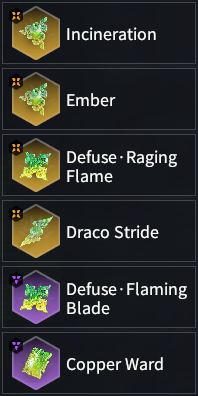
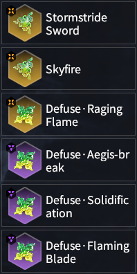
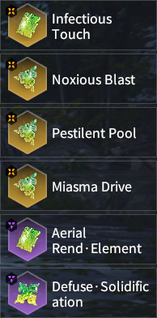
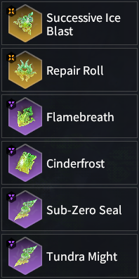
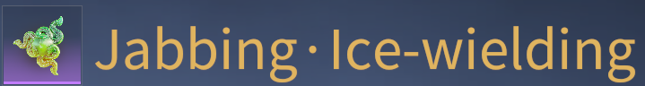
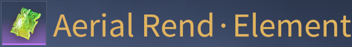
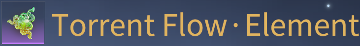
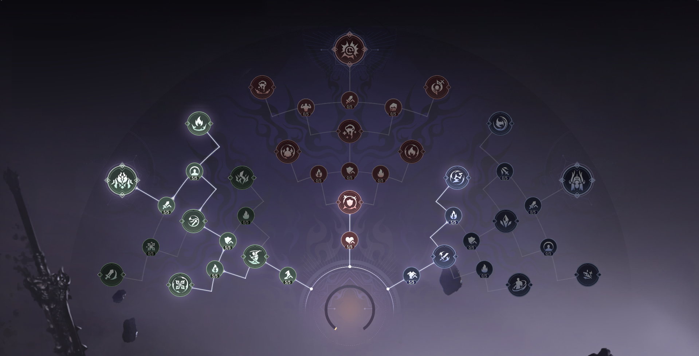

Jade Set Ups
This section will showcase the standard Souljade setups for each damage type,
including their respective strengths and weaknesses.
Ensure you replace the (Ice/Thunder)-Wielding Souljade with the one corresponding to your hero's favored element.
See Wielding Jades for more info.
In terms of damage output, right now Burn builds are at the top, followed by Thunder builds, and lastly Ice builds.
The following builds are listed with no particular order in mind aside from their main damage source.
Difficulty does not denote how strong a build is, but rather how hard it is to use it effectively.
Table of Contents
Burn Builds
| Thunder Scorch | |
|---|---|

Potential Plan Wielding Type Ice Best Attributes [Scorching] > [Windfall] > Health > Attack > Increase DMG to Boss = Defuse triggers Recovery = Counter triggers Recovery |
Difficulty 
Description This build relies heavily on the [Scorching] Rare Attribute for its damage output.
It makes use of Thunderpull, Thunder Counter, Thunderproof, and 0 Thunder-Wielding to counter Divine Thunder frequently,
allowing for repeated activation of [Scorching]. Combined with Draco Stride, this converts into Hydroflare damage for massive bursts of damage.
Currently, this build has the highest damage output in the game, but it requires heavy investment to use.
Recommended Heroes All Substitute Copper Ward for Defuse • Flaming Blade for more survivability and consistent damage, but smaller bursts of damage. |
| Standard Hydroflare | |
|---|---|
|

Potential Plan Wielding Type Thunder Best Attributes [Windfall] = [Scorching] > Health > Attack > Increase DMG to Boss = Defuse triggers Recovery |
Difficulty

Description Defuse • Flaming Blade and Defuse • Raging Flame give you access to powerful Burns when you Defuse an attack.
Draco Stride then Soaks the enemy to convert those Burns to Hydroflare for a big burst of damage.
Incineration will activate whenever you cause a Hydroflare,
which burns your own Health in order to charge up Ember for another strong Burn.
Copper Ward serves to reduce your max effective HP by half, so Ember charges twice as fast.
Furthermore, it provides +60% Health for more Burn damage due to Blazing Flame.
Recommended Heroes All Substitute Copper Ward for Defuse • Aegis-Break for more survivability, but less Burn damage. |
| Skyfire Storm | |
|---|---|
|

Potential Plan Wielding Type Thunder Best Attributes [Windfall] > Health > Attack > Increase DMG to Boss = Defuse triggers Recovery |
Difficulty
Description Defuses are heavily rewarded in this build. You get a large Attack and Elemental Accumulation Rate boost from Defuse • Aegis-Break and Defuse Solidification, alongside applying major Burns to the enemy from Defuse • Flaming Blade and Defuse • Raging Flame. Stormstride Sword aims to further boost the DPS of your Defuse Counterattacks and Martial Skills, but it is only effective on Heroes with many hits on those special attacks. Skyfire will then summon up to 3 pillars of fire that deal a burst of damage to enemies on hit. Recommended Heroes Feria Shen & Wuchen Substitute Defuse • Aegis-Break for Thunder Mastery for more consistent, but lower damage output. |
Poison Builds
| Poison Mod | |
|---|---|

Potential Plan Wielding Type Poison Best Attributes [Moderation] > [Windfall] > Increase DMG to Boss > Attack > Poison Blast DMG > Melee Weapon DMG |
Difficulty
Description By using the [Moderation] Rare Attribute, you can reduce the cooldown of your ability whenever you activate a Poison Blast by attacking enemies.
Poison Blasts activate Noxio us Blast which applies 1 stack of [Toxified] to the enemy.
It also activates Pestilent Pool which generates up to 2 [Toxified] stacks as they stand in the poison pool that's generated.
Standing in the pool will apply [Toxified] to yourself, which you can apply 2 [Toxified] stacks to the enemy by using your Martial Skill,
Defuse Counterattack or 3rd attack in any uncharged attack combo (doesn't apply to Greatsword or Polesword).
Once an enemy reaches 5 stacks of [Toxified] (6 if you don't have Poisonous Assault),
Toxin Blast will activate dealing major damage to the surrounding area.
Recommended Heroes: Viper Ning & Tarka Ji |
| Poison Storm | |
|---|---|
|
Potential Plan Wielding Type Poison Best Attributes [Windfall] > Increase DMG to Boss > Attack > Poison Blast DMG > Melee Weapon DMG |
Difficulty
Description Recommended for Heroes with lots of hits on their Defuse Counterattack and/or Martial Skill for Stormstride Sword deals high damage and accumulation. Poison Blasts activate Noxious Blast which applies 1 stack of [Toxified] to the enemy. It also activates Pestilent Pool which generates up to 2 [Toxified] stacks as they stand in the poison pool that's generated. Standing in the pool will apply [Toxified] to yourself, which you can apply 2 [Toxified] stacks to the enemy by using your Martial Skill, Defuse Counterattack or 3rd attack in any uncharged attack combo (doesn't apply to Greatsword or Polesword). Once an enemy reaches 5 stacks of [Toxified] (6 if you don't have Poisonous Assault), Toxin Blast will activate dealing major damage to the surrounding area. Recommended Heroes: Feria Shen & Wuchen |
| Poison Fang | |
|---|---|
|
Potential Plan Poison Fang or Standard Poison Wielding Type Poison Best Attributes [Windfall] > Increase DMG to Boss > Attack > Poison Blast DMG > Melee Weapon DMG |
Difficulty
Description Makes use of the new Cyan Fang Wielding Souljade for its high Toxin Accumulation value and life steal effect. Poison Blasts activate Noxious Blast which applies 1 stack of [Toxified] to the enemy. It also activates Pestilent Pool which generates up to 2 [Toxified] stacks as they stand in the poison pool that's generated. Standing in the pool will apply [Toxified] to yourself, which you can apply 2 [Toxified] stacks to the enemy by using your Martial Skill, Defuse Counterattack or 3rd attack in any uncharged attack combo (doesn't apply to Greatsword or Polesword). Once an enemy reaches 5 stacks of [Toxified] (6 if you don't have Poisonous Assault), Toxin Blast will activate dealing major damage to the surrounding area. Recommended Heroes: Viper Ning, Feria Shen, Tianhai, Kurumi, Valda Cui, Matari, & Wuchen |
| Standard Poison | |
|---|---|
|

Potential Plan Wielding Type Poison Best Attributes [Windfall] > Increase DMG to Boss > Attack > Poison Blast DMG > Melee Weapon DMG |
Difficulty
Description Recommended for Heroes who aren't able to make good use of the other Poison builds. Poison Blasts activate Noxious Blast which applies 1 stack of [Toxified] to the enemy. It also activates Pestilent Pool which generates up to 2 [Toxified] stacks as they stand in the poison pool that's generated. Standing in the pool will apply [Toxified] to yourself, which you can apply 2 [Toxified] stacks to the enemy by using your Martial Skill, Defuse Counterattack or 3rd attack in any uncharged attack combo (doesn't apply to Greatsword or Polesword). Once an enemy reaches 5 stacks of [Toxified] (6 if you don't have Poisonous Assault), Toxin Blast will activate dealing major damage to the surrounding area. Recommended Heroes: Tianhai, Temulch, Valda Cui, Yueshan & Yoto Hime |
Thunder Builds
| Thunder Wielder | |
|---|---|
|
Potential Plan Wielding Type Thunder Best Attributes [Windfall] > Divine Thunder DMG > Attack > Increase DMG to Boss > Melee Weapon DMG |
Difficulty
Description Thunderpull builds up Thundershock as you hit enemies with your powerful Thunder-Wielding attack, eventually summoning Divine Thunder that you can parry with Thunder Counter to deal massive damage to enemies in front of you. Sub-Zero Seal will gradually build Frostbite on you. Whenever you parry something, Ice Break will reset your Frostbite to 0 while also giving you a massive Attack boost from Spring's Call. Be careful: if you wait too long to parry anything, you will be frozen. Recommended Heroes Feria Shen, Tianhai, Temulch, Tarka Ji, Kurumi, Yueshan & Wuchen |
| Standard Thunder | |
|---|---|
|
Potential Plan Wielding Type Thunder Best Attributes [Windfall] > Divine Thunder DMG > Attack > Increase DMG to Boss > Melee Weapon DMG |
Difficulty
Description Thunderpull builds up Thundershock as you hit enemies, eventually summoning Divine Thunder that you can parry with Thunder Counter to deal massive damage to enemies in front of you. Thunderproof makes this Divine Thunder charge faster, but also prevents it from staggering you should you fail to parry it. Sub-Zero Seal will gradually build Frostbite on you in exchange for a damage boost. Whenever you parry something, Ice Break will reset your Frostbite to 0 while also giving you a massive Attack boost from Spring's Call. Be careful: if you wait too long to parry anything, you will be frozen. Recommended Heroes Viper Ning, Tianhai & Wuchen |
Ice Builds
| Ice Mod | |
|---|---|

Potential Plan Wielding Type Ice Best Attributes [Moderation] > [Windfall] > Ice Blast DMG > Attack > Increase DMG to Boss |
Difficulty
Description Attack enemies to build Frostbite on them and activate Ice Blasts for massive damage.
Successive Ice Blast increases the number of times Ice Blast hits, multiplying the damage it deals by 1.65.
Frozen Blast reduces the cooldown of Ice Blast from 6s to 4s. Sub-Zero Seal will build Frostbite on you over time,
but you can avoid being frozen by timing your ability or Ultimate at the right moment.
Tundra Might allows you to activate Ice Blasts significantly faster, while Arcane Thunder adds extra damage to your ability casts.
Incineration takes advantage of Skilled Fire Chant and Frost Douse in the Potential Tree to activate Hydroflare as you fight.
Recommended Heroes Viper Ning & Tarka Ji Substitute Incineration for Thunder Mastery for safer damage output, but less damage. |
| Steam Cannon | |
|---|---|
|

Potential Plan Wielding Type Ice Best Attributes [Windfall] > Ice Blast DMG > Attack > Increase DMG to Boss > Ranged Weapon DMG |
Difficulty
Description This build combines the fast activation rate of Ice Blasts with the range and AoE of Cannon, designed to clear mobs quickly from a distance. Successive Ice Blast multiplies the damage of Ice Blasts by 1.65. Frozen Blast reduces the cooldown of Ice Blast in case enemies survive the first one. Sub-Zero Seal boosts your damage slightly at the cost of gradually building Frostbite, but Cinderfrost ensures you don't freeze while Tundra Might greatly increases the accumulation rate of Ice Blasts. Flamebreath adds even more burst damage when Ice Blast activates by taking advantage of Frost Douse's Soak effect. Recommended Heroes Tarka Ji & Yueshan Substitute Cinderfrost for Yushan Shadows if you are comfortable Defusing the Freeze. |
Wielding Jades
With so many choices in Souljades and Potential Plans, it can be hard to know what build to go with. This section will help for choosing the most optimal Wielding Souljades as well as what Potential Plans they best combo with. Souljades with "-Wielding" in their name gain bonus elemental damage for that corresponding type, making it so you're able to activate Ice Blasts or Divine Thunder faster on enemies using the special attacks they give. They also generally have better DPS than their base counterpart.
Table of Contents
- I. Viper Ning
- II. Feria Shen
- III. Tianhai
- IV. Temulch
- V. Tarka Ji
- VI. Kurumi
- VII. Valda Cui
- VIII. Yueshan
- IX. Matari
- X. Wuchen
Viper Ning
|
Best used with Ice Potential Plans. 
Best used with Thunder Potential Plans. |
Feria Shen

Best used with Ice Potential Plans. 
Best used with Thunder |
Tianhai
|

Best used with Ice Potential Plans. 
Best used with Thunder Potential Plans. |
Temulch & Yoto Hime
|

Best used with Ice or Poison Potential Plans. 
Best used with Thunder Potential Plans. |
Tarka Ji

Best used with Thunder Potential Plans. |
Kurumi

Best used with Ice Potential Plans. 
Best used with Thunder Potential Plans. |
Valda Cui

Best used with Ice or Poison Potential Plans. 
Best used with Thunder Potential Plans. |
Yueshan
|  |
Matari
|
Best used with Ice Potential Plans. 
Best used with Ice Potential Plans. |
Wuchen

Best used with Ice Potential Plans. |
Potential Plans
The way you design your Potential Plans will be the backbone of your playstyle. This page will show you a variety of viable Potential Plans you can work with and where they are most effective.
Video Introduction
Table of Contents
Burn
The following Potential Plans are focused on maximizing the damage you deal from Burns.
Hydroflare
Focuses on procing Hydroflare and using your Martial Skill Aegis-Break on enemies for damage output.
Skyfire Storm
Focuses on using your Martial Skill Aegis-Break and procing Burns on enemies for damage output.
Poison
The following Potential Plans are focused on maximizing the damage you deal from Poison.
Standard Poison
The staple Potential Plan for Poison Souljade Set Ups. Works with any one of them.
Poison Fang
Aims to take advantage of the faster proc rate of Cyan Fang • Poison-Wielding for more Honed Duration.
Poison Storm

Gives a slight boost to Thunderbolt damage while significantly boosting the damage of your Martial Skill Aegis-Break.
Poison Mod
Seeks to also maxmimize the damage output from Arcane Thunder, while also giving an option to activate Incineration.
Thunder
The following Potential Plans are focused on maximizing the damage you deal from Divine Thunder.
Standard Thunder

The staple Potential Plan for Thunder Souljade Set Ups. Works with any one of them.
Ice
The following Potential Plans are focused on maximizing the damage you deal from Ice Blasts.
Ice Mod
Alongside boosting Ice Blast accumulation, also boosts Arcane Thunder and gives the option to use your Martial Skill Aegis-Break for consistent high DPS.
Steam Cannon

Grants the Cannon extra Ice Blast accumulation, while allowing you to cause Hydroflares from Ice Blasts for major burst damage on mobs.